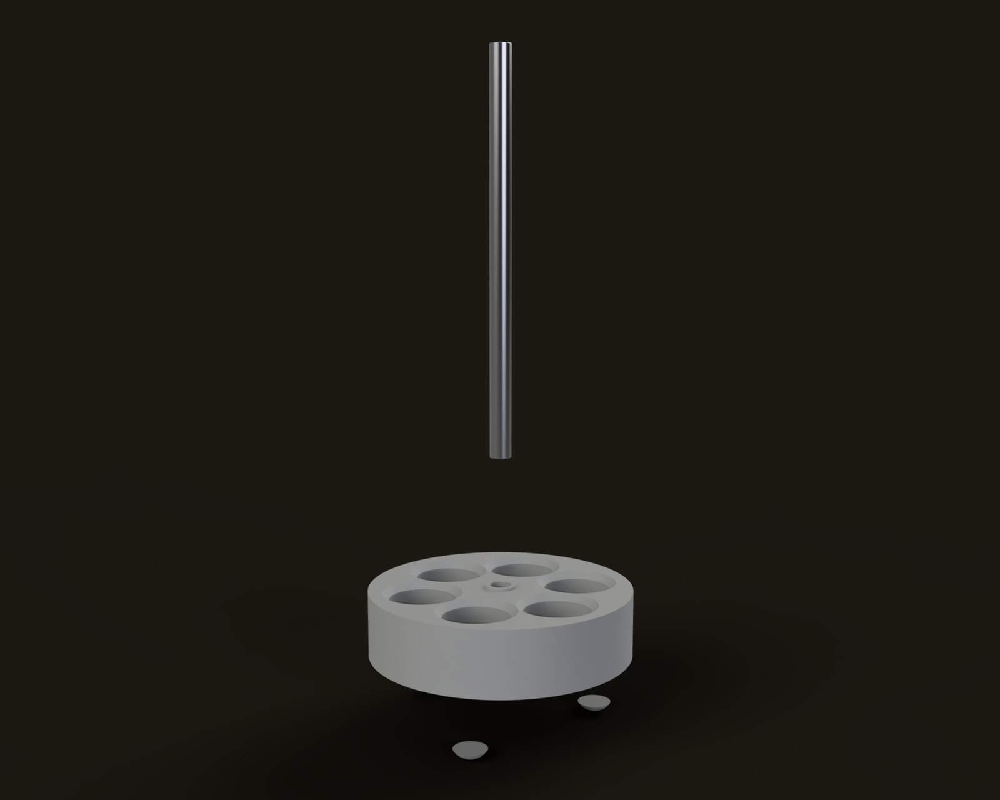
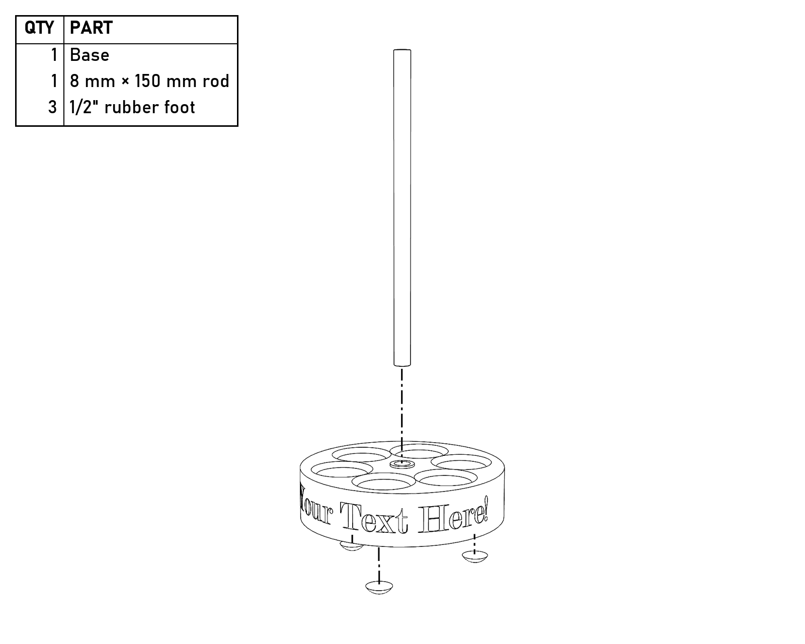
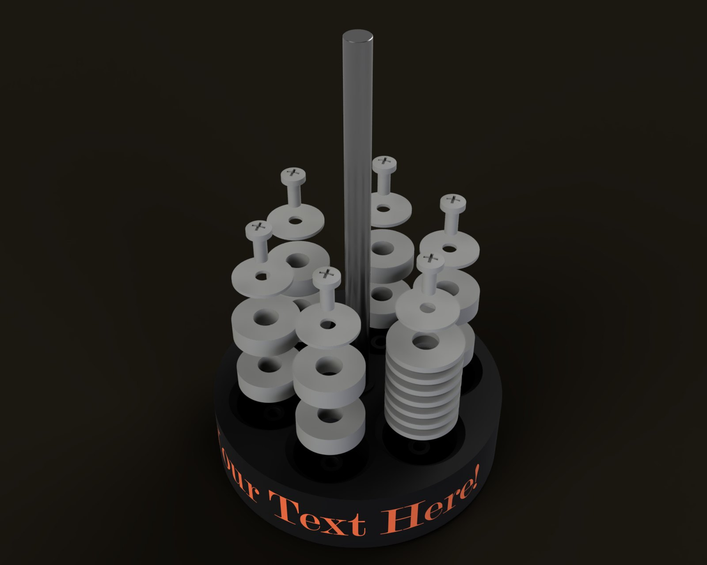
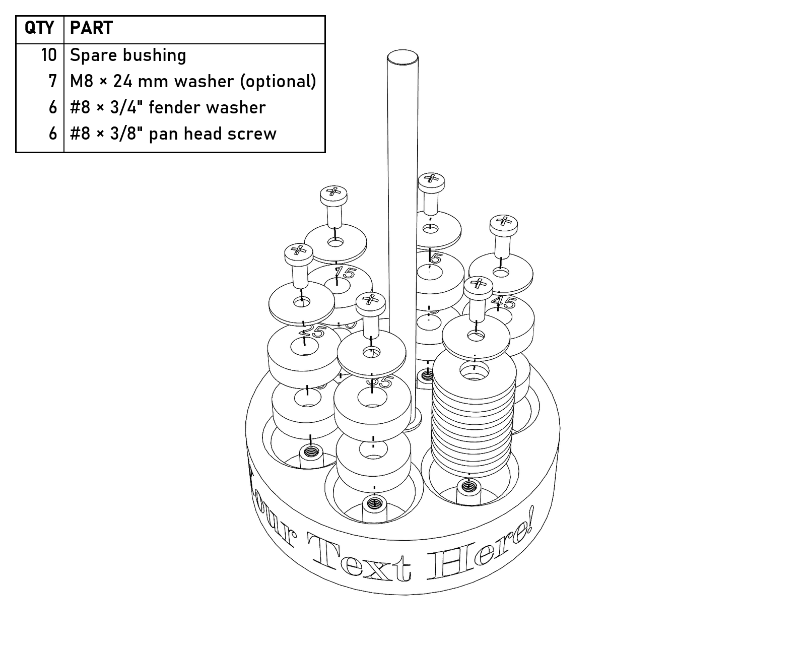
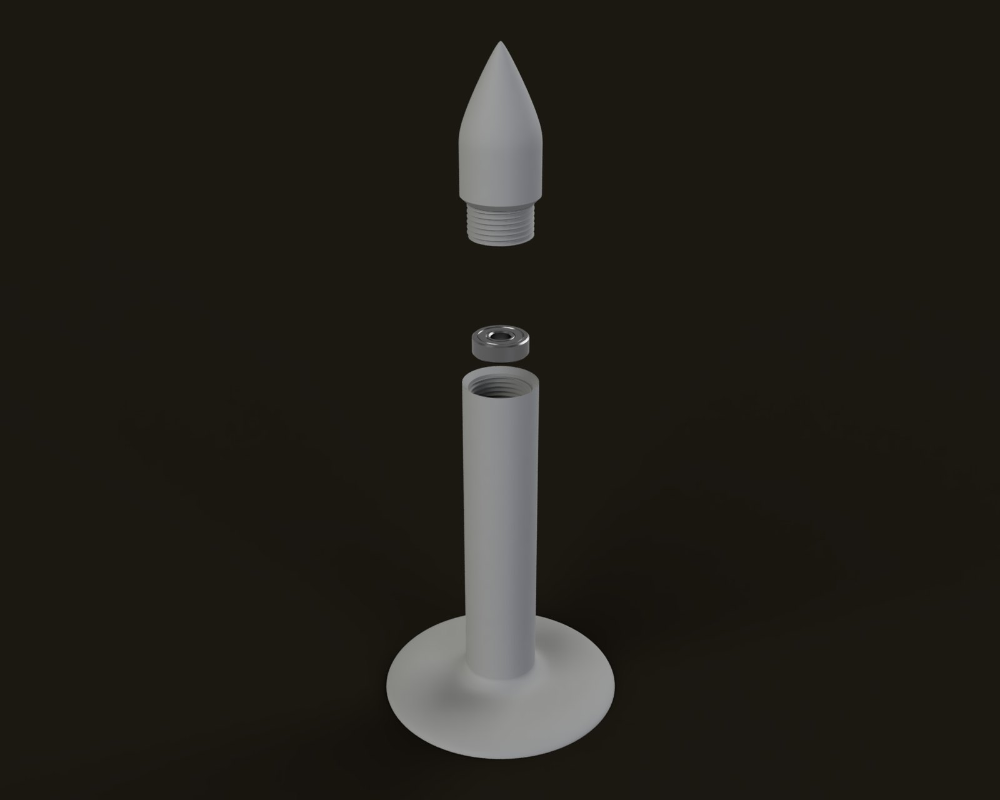
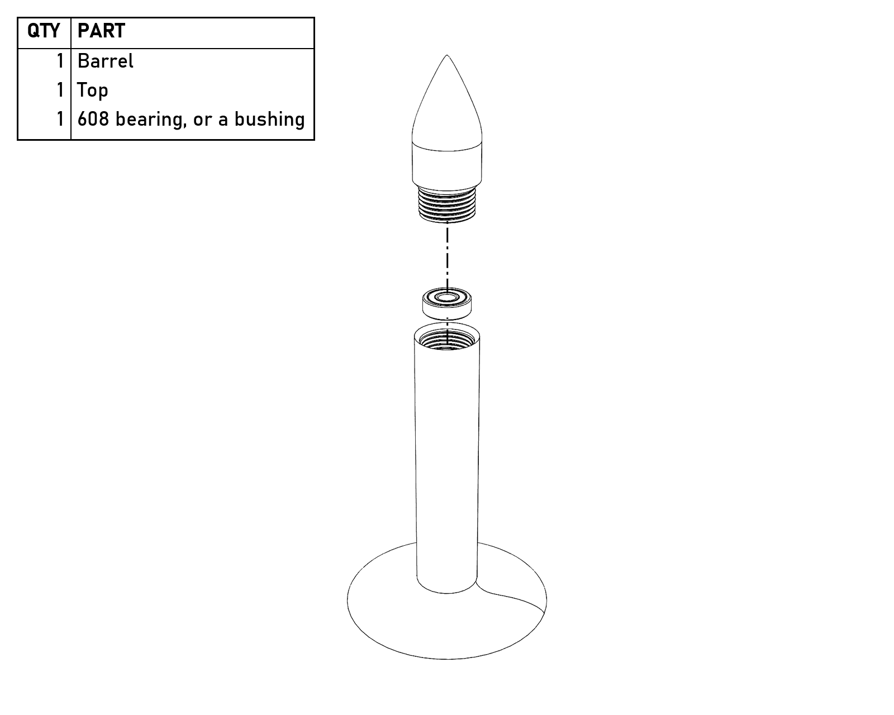
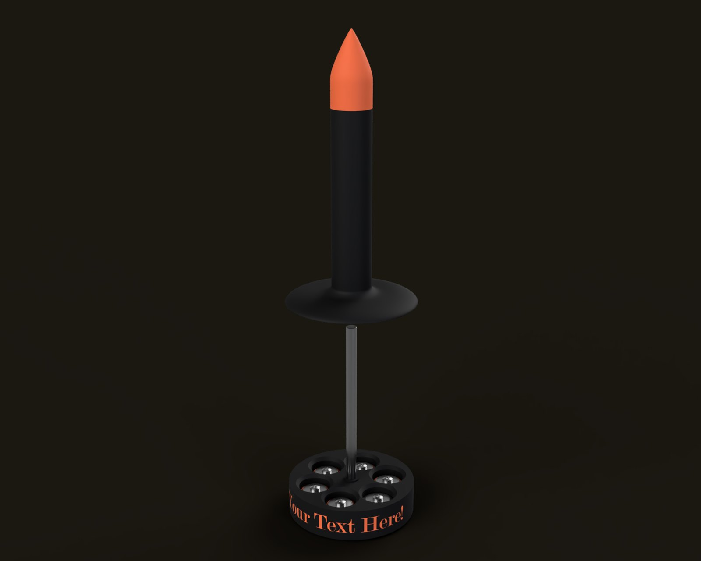
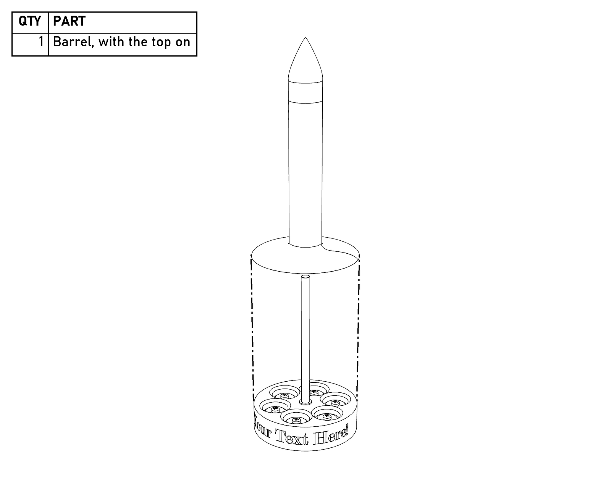

Building the Yarn Butler
Everything you need to buy for the Yarn Butler, and how to put it together. There isn’t much of either.
Prices checked October 10, 2026, and they will probably have changed by the time you read this. These are not affiliate links or endorsements, just the parts I used or the closest things I could find on the jungle website.
What it costs
The only part you really need is the rod; everything else is optional, and you can use whatever you’ve got. I did. If you buy every pack on the list, it comes to about $26, but the parts that actually end up in each butler come to about $4, and the rod comes two to a pack, so you might as well make two. They make a wonderful gift.
Parts
| Part | Listing | Use | Pack | Pack price | Per unit |
|---|---|---|---|---|---|
| 8mm x 150mm rod | Litoexpe linear rod | 1 | 2 | $5.49 | $2.75 |
| Rubber feet, 1/2in round | Scotch SP951 clear bumpers | 3 | 40 | $6.59 | $0.49 |
| #8 x 3/8in pan head screwsOne per pocket, to keep the spare bushings and weights from falling out | Phillips pan head wood screws, 304 stainless | 6 | 100 | $7.98 | $0.48 |
| #8 x 3/4in fender washersOne under each screw | 304 stainless, 3/4in OD | 6 | 50 | $5.99 | $0.72 |
| Total | $26.05 | $4.44 | |||
The screws go into the towers in the base’s pockets, and they’re just there to keep stuff from falling out. Use coarse-thread #8s (wood or sheet metal screws), which cut their own threads; no nuts, no printed threads. You only need six screws and six washers, so instead of buying a hundred of each from Amazon, you can pick up a few at your local hardware store for a few cents apiece. The towers are printed standing up, so they’re weakest across the layers and will snap off if you go any bigger or crank them down; snug is plenty. Put a washer under each one, or the bushings can slip past the head.
Optional hardware
A 608 bearing can take the place of a bushing (see Tuning the friction). M5×12 screws work in place of the #8s, with M5 washers, since the #8 washers are too small inside for M5. And if you want the base heavier, the 24 mm M8 washers fit the pockets; seven of them fill one, the same height as two bushings.
| Part | Listing | Use | Pack | Pack price | Per unit |
|---|---|---|---|---|---|
| 608 bearingIn place of a bushing | SHKI 608-2RS | 1 | 20 | $6.99 | $0.35 |
| M5 x 12 button head screwsIn place of the #8 screws | iexcell, 304 stainless | 6 | 50 | $7.86 | $0.94 |
| M5 washers, 15mm ODWith the M5 screws; the #8 washers are too small inside for M5 | M5 x 15 x 1.2mm, 304 stainless | 6 | 100 | $6.99 | $0.42 |
| M8 washers, 24mm OD, for weightSeven fill a pocket | binifiMux M8 x 24 x 2mm | 7 | 50 | $8.69 | $1.22 |
From your shop
- Filament, about a quarter roll (234 g). PLA is fine for the top and the barrel, but print the base in PETG if you’re putting screws in it (see Printing).
Build guide
The drawings are made from the CAD model. Each one shows the parts that step adds, pulled apart along the way they go together, with a parts list. The latest version of this guide, with color renders, is at thunderbirdlabs.com/yarn-butler-build.html, and the files are on Printables (printables.com/model/1492586).
The pictures are made from the CAD model: a render on the left and an exploded drawing with a parts list on the right (click either one to see it bigger). The parts you’re adding in that step are gray, and the ones you’ve already put together are in color. There’s also a printable PDF of this page, with just the drawings.
Tools
- A hammer, for the rod
- A Phillips screwdriver for the #8s (or a 3 mm Allen key, if you used M5 button heads)
Printing
- Print the parts in the provided orientations.
- The threads work fine at 0.20 mm layer height, but better at 0.10 mm. Variable layer height works well to make the threads finer and remove layer lines in the smooth curves at the bottom of the barrel and at the top of the…top.
- PLA is fine for the top and the barrel, but if you plan to use screws in the base it may crack; PETG has been tested and works well. Consider printing the base with a high wall count and/or infill ratio to add mass, or just add mass later with the M8 washers.
- I used PETG for the bushings and it works well. PLA hasn’t been tested, but should be fine.
- The bushings marked MMU (numbers down) are for multiple filament printers. For single filament printers use the bushings marked No MMU, and print them numbers up (as provided).
- If you don’t plan on using a bearing, print the 25–45 bushing set first, and print the 0–20 set if the 25 is too loose.
- The lettering on the base is its own part, so a multi-material printer can print it in another color. If you’re printing in a single color, just set it to the same color as the base.
Tuning the friction
The friction is set by a 608 bearing or one of the bushings in the top of the barrel. The bushings are numbered 0 to 45, and the number is the internal diameter over 8 mm: the 0 bushing is 8.00 mm, the 20 bushing is 8.20 mm, and so on, so the smaller the number, the more friction it makes (friction go up as number go down).
- If you want to use a 608 bearing, start by using it without removing the internal assembly lube, for more friction, then try rinsing it out if it’s too much.
- Use no bushing or bearing at all for a very low friction experience.
- The 35 or an unrinsed 608 seemed about right to me, but personal preference and printer calibration are things that exist.
Assembly
- Press the rod into the hole in the base…and by press I mean pound. You will almost certainly need a hammer; the fit is intentionally…snug.
- Stick three rubber feet into the recesses on the bottom of the base.


The rod goes in from the top, and the feet go in the recesses underneath.
- Put the spare bushings in the pockets in the base, up to two to a pocket, and fill any empty pockets with M8 washers if you want more weight. Put a washer and a #8×3/8″ screw on each pocket’s tower to keep everything from falling out. Snug is plenty; the towers snap if you overdo it.


Two spare bushings in each of five pockets and seven M8 washers in the sixth, with a fender washer and a #8 screw on every tower. With a 608 in the barrel, all ten bushings are spares.
- Drop a bearing or bushing into the recess in the top of the barrel, and screw the top on most of the way, but not touching the bearing or bushing.


The bearing (or a bushing) drops into the top of the barrel, and the top screws on over it.
- Put the barrel assembly onto the rod, wiggle it to line up the bushing, and tighten the top.


The barrel goes straight down over the rod.
- Test the friction. For more friction, use a smaller numbered bushing; for less, a larger number.
Customizing
The STEP file is included, so you can put whatever you want on the side of the base, like a name to make it a gift. If you’re using Fusion 360 and the Emboss tool won’t work with the font you picked, just try a different one.
Usage
Beats me, I don’t actually knit. Presumably if you’ve made it this far you either know how to use it or know someone who does.
Files
The STEP model and printable 3MF files are on Printables. Everything is CC BY-SA, so remix away, and tell me what you build, break, or improve.
Get the files on Printables →